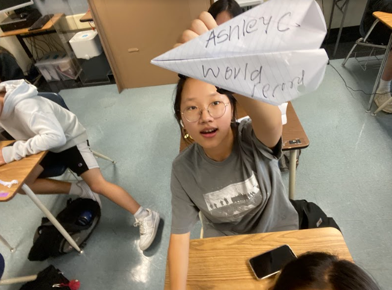

Week 2
8/29/22 - 9/2/22
Today we made a design of Dasani water with tinkercad. It was harder than I expected. I used many different shapes and
it took a long time to finally get it right but I wasn't able to wrap the "Dasani" text around the water bottle. Overall
it was a very stressful experience but I still enjoyed it. I thought I did pretty well but I saw other's designs and my
jaw dropped. :D We also started to work on the Rube Goldberg Machines. I created an incline, pulley, and lever. We created
3D designs on tinkercad but it was challenging to be so precise with all the measurements. Creating the design was especially
hard, as I had no idea how to pop a ballon using a baseball. Youtube helped me to create my design and incorporate at least
three mechanisms in this project. I think I did well regarless. This week was interesting and now I know how hard the designing
process actually is.
Week 3
9/5/22 - 9/9/22
We started off the week with continuing our Rube Goldberg Machines. We got into groups and chose the best design to put
to life. We did not end up choosing my design but the design we did choose was simple and effective so it all worked out.
The design we did choose had all the correct measurements and had an easy to make structure. I am glad we chose that design
it looked very easy to make. For our challenge, we created an E with another person's measurements. Using paper, we cut out
the Es. I surprisingly did not make any mistakes. It was pretty easy considering the crafts I've done in the past. This week
was light and enjoyable.
Week 4
9/12/22 - 9/16/22
This week we finally started building the Rube Goldberg Machine. It was a bumpy start to find out what were should do with
the ciruclar parts of the machine but we figured it out but just using square/rectangular parts instead. My group did not
stick to the original design but we learned that if there ever was an error, the design would be sent back to the offices,
they would have to fix their errors, and send it back to redo the machine. We, however got a free pass and didn't have to
redo the tinkercad. We finished quickly and had time to spare. On Friday we had another challenge. We made a paper boat
and saw how long it would float in water and how much weight it could hold. I was satisfied with my design but again, it
wasn't chosen. The deisgn we did pick sunk in under 1 second :/ I think we could've lasted a lot longer with my paper boat
because it had a larger surface area and taller sides so water wouldn't leak through. Although I was dissapointed that my
design wasn't chosen, it was still fun to see other's boat float and succeed.
Week 5
9/19/22 - 9/23/22
This week we finally tested out our Rube Goldberg Machine. We came into class and heard that a group's machine was knocked
over and broken so I was praying it wasn't ours, but it was ;/ Fortunately, it wasn't too damaged to the point where we had
to reconstruct everything but it still took some time to repair. It was very difficult and there were many fails but we ended
up successfully popping the balloon. We had many struggles and debates but I am glad it turned out okay. We spent all of Wednesday
doing the MAP testing but couldn't get into the website for an entire period. The strategy to getting in was a complete fail
so we tried again after snack and we finally got in. Many people finished but I still had many questions left. On Friday,
I caught a cold so I wasn't able to participate in class. This week was fun but also stressful because of our broken machine.
Week 6
9/26/22 - 9/30/22
We started a new type of engineering this week, computer engineering. A guest speaker talked about his job as a computer
engineer and basics of a computer. We learned how to disect a computer and we worked on it for the whole week. I thought
it was going to be easy because of the provided steps but it was not. It was especially hard to take out the keyboard and
I think we might have broken a key... The entire process of taking the computer apart was time consuming but I could easily
find where each step was on the computer. We did have difficulty coloring the worksheet. We didn't know many parts of the
computer so it has hard to locate the different parts of the computer but we did it eventually. Putting the computer back
together was the hardest part. Although I describes the different screw for each step with great detail, it was still hard
to find the correct screw. Overall, this activity was interesting but very stressful.
Week 7
10/3/22 - 10/7/22
Today we started working on bioengineering. We got to choose our own animals and make a prosthetic limb for them. I chose a
dolphin and its fin. This prosthetic tail has been made before but I tried making it better than the original. I added
components of a human flipper for the dolphin tail. I think my tinkercad came our great and it really looks like a dolphin’s
tail. It is supposed to be made out of On Friday we focused on the steps to making a peanut butter and jelly sandwich.
It was very hard to write down every single step, opening the bag of bread, taking out a plate, etc. It needed to be very
detailed and I think it helped me realized how specific everything has to be in order to correctly create something.
Week 8
10/10/22 - 10/14/22
This week we started on aerospace engineering. It is not the type of engineering I
would want to do just because of all the work that goes into each individual part of the airplane.
We started off this week by creating our own plastic waterbottle rocket designs on tinkercad. I am
very unsure of what it is supposed to look like but I tried my best to make it look good. The materials
needed for my rocket are very minimal which I like. My design is simple and easy to look at.
On Thursday, we designed and created our own paper airplanes. The goal was to hit the orange bucket from
the second floor of the 1000 building but I was unsuccessful. My airplane was called the
"World Record Paper Airplane" but it did not meet up to my expectations. My airplane did not glide
smoothly because I threw it aggressively and the wind was also messing it up. It was a fun challenge
and it felt nice to go outside and get some air while still doing an assignment.
